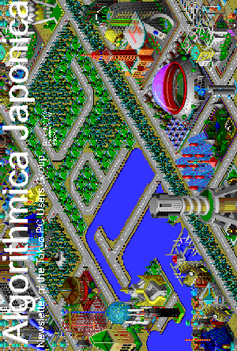

|
1996
- December
- Beast Manor, EasyScroll Mouse, MIDI, Digital Cameras
- November
- New Executives, Resources for TPC Members, Ricoh DC-2L Camera, Silicon
Snake Oil, Software Design
- October
- AWE32, Arena, BBS Site Sought, View of Islam Review,
Tatami Boxes Poem, Information Superhighway and Connectivity
- September
- Beast Manor, Two Computers, One Printer: One Cable?,
- August
- Beast Manor, Port Convenience, Too Much Surfing an Addiction?,
Win95's MSDOS.SYS, FrameMaker, OS/2, HyperAccess, Win95, ISDN, Lantastic
- July
- Getting Things Working with Windows95, Running Win95 E&J on One
System, Make a LaserWriter Cable, Haight Ashbury in the Sixties,
Buying a Notebook in Akihabara
- June
- System Commander, BBS Configuration, TPC's New Voicemail System,
Akihabara Bargain Hunting, Putting Together a Pentium 150 Machine,
DOS/V Tips for the English Speaking, CeBIT 96 Wrap-Up
- May
- Upgrading the Beast, Getting started with Perl, Be Prepared for your
Next Hard Disk Crash, CeBIT 96
- April
- Upgrading with MO, TPC Net Connectivity, Akihabara Bargains, PCMCIA
Problems, CeBIT 96
- March
- New Venue, A Home Page in 10 Minues, Picking the Top Kid's Software,
Newsletter History
- February
- Perl, Fax-to-Internet, UPS, Swappable Drives, Akihabara Shopping
- January
- ISDN, Telehodai, Voice Organizer,
Putting Together the AJ
|